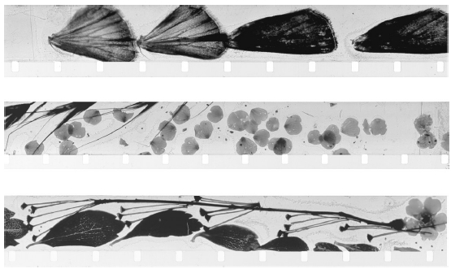

纪录片是什么样的？大部分人脑海中对什么是纪录片有一个大概的概念。对于很多人来说，纪录片的画面并不美。一部“通常的纪录片”常常意味着有响亮的、“上帝之声”般的旁白，通过分析来展示论点而不是讲述有人物的故事，镜头对准专家和受访路人的脸部，用图像来说明叙述者的观点（电视语汇中常称作“辅助画面”），说不定还有一些有教育功能的动画和厚重的音乐。人们想到这些形式元素的组合时，通常并不会感到兴致盎然。如果有了愉快的观影体验，人们常常会说：“这片子很有意思，不像通常的纪录片。”
事实上，为了让观众相信影片内容的真实性和重要性，纪录片的形式选择非常之多。和“通常的纪录片”相关的形式元素，在20世纪末的电视纪录片中已经成为标准定制的选择，但除此之外还有其他很多可以增加的元素。这一章将从不同的角度向你展示，纪录片是制作人运用可能的手段，对如何再现现实作出的一系列决策。这些手段包括声音 （环境声音、背景音乐、特殊音效、对话、旁白）、画面 （实景拍摄及通过照片、录像或实物呈现的历史画面）、音频和视频特效 （包括动画），以及节奏 （通过画面的长度、剪辑次数、剧本或故事叙述的结构来控制）。纪录片制作人选择他们想要的方式来构建一个故事——选择呈献给观众的是什么人物、集中展现谁的故事、怎样讲述故事。
对于以上每一种元素，纪录片制作人都会面临多种选择。比如，单个的镜头如果运用不同的画幅，就具有不同的意义：一个伤心的父亲的人物特写和将同一画面放在整个房间中拍摄的广角镜头意义大为不同。选择让葬礼上的环境声音成为主要的背景音也与选择响亮的配乐意义不同。
纪录片怎样再现现实并没有什么天然的方式，因此，纪录片制作人非常清楚，他们作出的所有选择都会影响他们选择要表达的意义。所有纪录片的习惯手法——表达形式上的一些惯例或套路——都出于一个需要，即让观众相信他们看到的一切是真实的。比如，影片中会出现专家来担保分析的真实性，稳重的男声旁白对很多观众来说意味着权威，古典的背景乐则暗示着话题的严肃性。
改变这些习惯手法是有风险的，意味着要以其他方式表明真实性。曾经，电影拍摄中很难录制到环境声音，因此35毫米胶片的纪录片制作有一个习惯手法：要有一个带有权威感的男声旁白。这一时期的习惯手法还包括使用灯光甚至演员演出，来适应沉重而难以搬动的器材。一些纪录片在各个虚拟构造的场景之间进行仔细的编辑，以给观众制造这种幻觉：眼前看到的一切是真实的。第二次世界大战之后，纪录片制作人开始尝试用16毫米的设备拍摄，纪录片又出现了一些新的习惯手法，让观众相信其真实性：拍摄相当长的镜头或场景，让观众觉得自己眼前的一切没有经过修饰；手持摄像机摇晃的镜头，也意在制造“你就在现场”的即视感，还暗示着事件的急迫性；“突然袭击”式的采访（抓住采访对象忙碌或没有准备的时机提问），让观众觉得采访对象一定是在隐瞒什么。20世纪60年代末，选择不用旁白成为纪录片的新潮流，这一做法帮助观众相信，他们可以自行判断眼前看到的一切意味着什么（虽然他们所看到的内容实际上都经过了有选择性的剪辑）。
纪录片和故事片运用的技术手段并无二致。摄影师、音响师、数字技术人员、音乐制作人和影片编辑可以在两种不同的模式下工作。纪录片也会需要灯光，导演也会让纪录片中的角色重拍一些镜头。纪录片通常需要复杂的编辑。制作人会在影片中添加音效和配乐。
大多数纪录片共有的一个习惯手法是叙事型的结构。它们都是一些故事，有开始、中间和结尾；它们向观众塑造角色，引领观众进行一场情感体验之旅。它们常常采用一些经典的故事结构。乔恩·埃尔斯制作了一部关于第一颗原子弹制造者J.罗伯特·奥本海默的纪录片——这位科学家觉得自己深负罪责，因而痛苦不已。埃尔斯让全体工作人员读了《哈姆雷特》。
习惯手法在吸引观众注意力、促进故事叙述和与观众分享制作人视角方面都颇为灵验。这些习惯手法现在成了一种审美范式——对纪录片制作人来说是现成的选择，也是制造真实感的捷径。但是，习惯手法也会隐藏制作人带入影片中的个人臆断，让一些特定的事实和场景呈现为必然的、全部的事实。
展现习惯手法
那么，怎么才能清楚看出表现形式和习惯手法是特意为之？我们可以先看看某些纪录片，在这些片子中，制作人将形式选择作为影片的主题，放在显眼而中心的位置来展现，并且突出了它们和一般纪录片的不同。
了解习惯手法，最简单的途径之一是观看讽刺纪录片和戏仿纪录片。以著名的西班牙超现实主义艺术家路易斯·布努埃尔导演的《无粮的土地》（1932）为例：片子开头探访西班牙一个贫瘠的角落，像是一部无聊而煞有介事的旅游片。但很快，人们就弄清楚布努埃尔是在借助由超现实主义艺术家皮埃尔·乌尼克撰写的解说词，用干巴巴的、伪科学的纪录片习惯手法来引发观众的困惑和愤怒——不仅仅是针对解说员，也继而针对影片中乡村骇人的社会现实。英国广播公司（BBC）1957年制作的纪录片《意大利面大丰收》是系列节目《全景》中的一集，它带领观众来到瑞士看最近意大利面（长在树上）大丰收的情景，不仅仅是一个笑话，也是一堂生动的媒体知识课 [3] 。讽刺片《寻找地球边缘》（1990）声称是在探讨地球为什么是平的，其中运用了大量教育纪录片的表现手法，让人们很容易联想到“通常的纪录片”——但影片有意凸显了这些手法的蠢笨——就是为了展示科学论证中的谬误逻辑和纪录片制作中的人为操纵。片中，专家们挂着“大学教授”之类的头衔，站在象征学富五车的书架前，但说的全是废话；花哨的图表显示着物理学上种种不可能发生的情况；解说员以轻蔑的口吻描述地球是圆的这一想法。一张家庭合影被给予了渐进特写，采用了平移和缩放效果，目的只是展示其中某个人物掉头的动作。由一群原住民制作的澳大利亚纪录片《烧烤地带》（1988）则讽刺了民族志纪录片的习惯手法，比如在解说时赋予异国风情的他者神秘和魔幻的特征、邀请专家作见证、聘请装腔作势的解说员，以及将科学调查美化为无畏探险的套路。影片中，一群土著科学家对某地展开了调查，他们认为这里是澳大利亚白人文化仪式的举行地，而实际上此地只是一个吃烧烤的地方。
伪纪录片，或幽默讽刺的假纪录片，也提供了一个观察习惯手法的角度。罗布·赖纳的《摇滚万岁》（1984）是关于一支虚拟重金属乐队的纪录片，是对摇滚纪录片——纪录摇滚乐队演出的影片的著名戏仿，采用的手段是将乐队台前活力四射的表演与幕后的种种荒唐事进行对比，并采取了民粹主义成功故事的讲述方式。后来的伪纪录片《宠物狗大赛》（2000）和《风载歌行》（2003）也是一样，其幽默效果取决于观众是否能够识别出其中纪录片的习惯手法。
艺术实验
另一个识别习惯手法的方法是分析某些制作人的纪录片，这些制作人认为自己本质上是艺术家——在影片的形式上做文章的艺术家，而不是以影片为媒介的故事讲述者；他们总是不断地创造、再创造并挑战各种形式。虽然吸引观众的市场压力常常让很多纪录片制作人采取观众熟悉的习惯手法，但置身于影片和录像市场之外的艺术家们，却寻求超越这些手法。他们是走在前沿的创新者和实验者。
城市交响曲纪录片就是这种反潮流艺术形式的代表之一，并备受瞩目。20世纪二三十年代，影院放映的都是有关自然探险、战事新闻、异域风情的电影，这一时期为两次大战期间欧洲艺术馆创作的艺术家们，对电影（当时还是一种无声的媒体）的形式进行了多种想象，其中一种认为电影是可以将不同的感官体验结合起来的视觉诗歌。当时正是一个各种实验不断涌现、国际交流也十分活跃的时代。城市交响曲纪录片和这个时代一样，对城市、机器和进步充满了现代主义的爱。这些纪录片吸收了超现实主义、未来主义等艺术运动中的元素，要让人们看到平时看不到或者不愿意看到的东西。艺术家们喜爱的机器也包括摄像机本身，用苏联纪录片导演和理论家济加·韦尔托夫的话来说，它代表着更为优越的“机器之眼”。早期城市交响曲纪录片的代表之一是保罗·斯特兰德和查尔斯·希勒摄制的《曼哈塔》（1921）。20世纪20年代后期，这种形式的纪录片在欧洲遍地开花。
城市交响曲的得名源于德国纪录片制作人瓦尔瑟·鲁特曼拍摄的《柏林：城市交响曲》（1927）这一纪录片。鲁特曼还让人为这部影片配上了音乐。“城市交响曲”这一术语，将现代城市中不可一世的工厂企业与交响曲这一经典的音乐形式联系起来，而交响曲这一形式正代表着将许多单个的元素组织协调起来形成整体感的能力。影片带领观众坐上列车来到柏林，体验一天中都市生活的方方面面，从人和机器的互动开始，在夜晚的烟花表演中结束。鲁特曼在这部影片中实践了韦尔托夫的观点，即纪录片是具有强大力量的观察社会的“眼睛”，这种观察在某种方式上超越了人类的观察。
许多艺术家抓住城市交响曲这一概念，开展电影实验。鲁特曼正在拍摄的《柏林：城市交响曲》启发了巴西艺术家阿尔韦托·卡瓦尔坎蒂，后者制作了《时光流逝》（1926），这是一部关于巴黎的电影，比鲁特曼的作品更早完成。影片聪明地运用了特效，以快节奏的镜头带领观众领略巴黎，包括社会最上层和最底层阶级的情形。在法国南部，韦尔托夫旅居国外的弟弟鲍里斯·考夫曼则和法国艺术家让·维果制作了一部暗藏讽刺的小型纪录片《尼斯印象》（1930），展现了这座海滨城市赌博、阳光崇拜和自我陶醉的放纵文化。（韦尔托夫为他弟弟的这部电影撰写了拍摄指南。）在比利时，亨利·斯托克制作了《奥斯坦德景象》（1930），细致入微地记录了他生活的这座海滨城市。荷兰电影制作人约里斯·伊文思曾和斯托克一起工作，他拍摄的纪录片《雨》成为此类影片中的经典。在这股潮流的影响下，韦尔托夫拍摄了他的代表作《持摄像机的人》。
城市交响曲纪录片一直是一种不寻常的、诗意的形式选择，是纪录片习惯手法之外的一种体例。戈弗雷·雷焦1982年拍摄的纪录片《失衡生活》用类似灯光秀的技巧和延时摄影（城市交响曲纪录片率先使用的技法之一），以戏剧性的方式评论了人类对地球的毁灭性破坏。影片的名称来自霍皮语 [4] 中的“失去平衡的生活”一词。美国电影学者汤姆·安德森则几乎动用了一个世纪以来的电影资源，以在他的《洛杉矶影话》（2003）一片中反映各类电影是如何再现洛杉矶这座城市的。它展示了商业和公众想象中的洛杉矶，调子时而讽刺、时而悲凉。
其他自称为艺术家的制作人，也寻求种种方式，想让纪录片成为一种通往视觉净化和感官狂欢的途径。他们的纪录片有意回避了一些习惯手法，如故事情节、旁白等，甚至不使用这个世界上常见的物体；他们提供了另一种方式让观众理解自己期待中的事物。肯尼思·安杰、约纳斯·梅卡斯、卡罗里·施内曼、约旦·贝尔松和迈克尔·斯诺的纪录片均创造性地阐释了现实生活，虽然他们将自己定位为先锋派艺术家而不是纪录片制作人。不过，有一位著名的美国先锋派艺术家却认为自己是纪录片制作人——而且还是科学家，他就是斯坦·布拉哈格。
布拉哈格希望观众回归到“纯洁的双眼”，回归到视觉体验的纯粹状态。他想帮助观众去观看 ——不仅仅是双眼从外部世界摄入的一切，还有双眼通过身体内部的记忆和能量创造出的一切。“我的的确确认为我的影片是纪录片，所有的片子，”他曾说，“都代表了我的一种尝试：想要尽可能地准确再现观看这一过程。”布拉哈格的大部分作品都是默片。他制作这些纪录片时怀有一种热烈的信念，即观看是一个调动全身力量的行为。令人称奇的是，他关于双眼运作方式的艺术直觉和观点，得到了视觉科学研究的验证。
布拉哈格制作了上百部影片，最为人熟知的是《飞蛾之光》（1963）和《人间乐园》 [5] （1981）。在这两部短片中，布拉哈格找来自然物体，将其放入两片赛璐珞胶片之间，再将得到的图案显映出来。《飞蛾之光》的胶片里有蛾翅，《人间乐园》的胶片里有树枝、花瓣、种子和杂草。这种方式制作出的图像带给了观众一种视觉体验：反映的是原来的物体，却是完全不同的形态。
艺术纪录片还对声音进行了实验。20世纪二三十年代，德国的实验派影片制作人汉斯·里希特曾将声音的节奏转译为视觉体验。20世纪70年代印度的“平行电影”（也就是和商业电影平行的电影 [6] ）得到政府资金的支持，印度电影人马尼·考尔的艺术道路即开始于这一环境中，他在电影中反复运用印度歌曲的传统，《德鲁帕德》（1982）便是其中一例，影片中吸引观众的是一种古典的、帮助人冥想的音乐表演形式的声音和画面。人们常常理所当然地认为声音可以便捷地传达情感，这样的作品正是突出强调了这一点。

图2 在《飞蛾之光》中，实验派纪录片人斯坦·布拉哈格将蛾翅、小树枝和花瓣压在两块赛璐珞胶片之间。斯坦·布拉哈格导演，1963年
所有这些作品中，几乎不存在“通常纪录片”的习惯手法。没有解说员来告诉我们发生着什么；没有专家来喻示权威性；平常的现实被故意变形，让我们以不同的方式看待它；配乐不再是为了渲染故事的情感，而是有了其他的用途。光影和黑暗的运用、不断重复和催人入眠的音乐、自然物体在银幕上放大数倍的投射，以及其他种种手段，都让我们感到震惊，因而跳出自己原有的观看习惯。这些实验极大地拓宽了纪录片制作人老一套的形式选择。同时，这些实验也和最常见的那些习惯手法——电视纪录片中的那些手法——形成了鲜明的对比。
经济大环境
纪录片的习惯手法也受到商业情形的制约。电视观众在一两秒的时间内就会决定是不是要观看某个节目，当今的制作人就要努力让自己的纪录片每时每刻都有震撼效果，而且不但要通过明显的标识，也要通过鲜明的风格打造出自己的品牌形象。他们也在寻求通过固定的风格和形式，快速生产和降低成本。20世纪90年代后期，一位“历史”频道的主管曾对一群锐意进取的制作人明确解释过该频道当时的制作公式——或者利用库存的纪录片脚本、或者利用小规模的搬演场景或物体，旁边是正在说话的人物的头像特写，加上旁白。这位主管说：“我们这样做是因为成本低，而且很有效。”
纪录片制作人一直依靠三种渠道来为纪录片募集资金：第一种是赞助人 或捐助者 ，其中既有公司也有政府；第二种是广告商 ，这在电视纪录片中很常见，而且近水楼台；第三种是纪录片使用者 和观众 。每一种资金来源渠道都强有力地影响了纪录片制作人的形式选择。
政府投资在纪录片的制作中一直扮演着至关重要的角色。在英联邦，致力于纪录片制作和销售的机构有英国广播公司、澳大利亚广播公司、加拿大国家电影局等。整个欧洲大陆的政府都为拍摄纪录片的艺术家们提供资助。在这些投资的作用下，德国、法国和荷兰的纪录片蓬勃发展。在发展中国家，前殖民势力有时会出资赞助文化产业；各国政府不仅会为纪录片制作提供资源，还经常把持着决定影片能否公映的权力。各国政府提供这些资助背后的强大动因是文化民族主义。纪录片录制的主题和风格常常反映了表达民族身份的需要，特别是在美国大众媒体不断占领世界的背景下，这样的表达显得尤为重要。
美国的情况与此相反，国家的文化政策虽然一直非常支持商业媒体，在运用税收支持纪录片制作方面却一直不够积极。在林登·约翰逊的“伟大社会”政策的全盛时期，美国公共广播事业迎来了新生，非商业、非政府机构获得了公共资金，增强了在多数主要城市中还很薄弱的公共广播电视机构的运营能力。20世纪七八十年代，其他的文化组织，特别是纳税人赞助的美国国家人文基金会和美国国家艺术基金会，都对美国纪录片的发展作出了贡献。纪录片中一些非传统的风格、主题以及政治上的敏感话题常常令国会中的保守派恼火。
政府还运用另外一种方式影响纪录片的制作，即制定条例，有选择性地鼓励某些类型的纪录片的制作。比如，英国政府曾颁布条例允许私有商业电视频道存在，同时它也要求这些频道承担宣传公共利益的职责；在这一背景下，出于赢得声誉、获得认可和续签电视播放许可的需要，各个电视台投资推出了很多野心勃勃的纪录片节目。利用来自某商业频道的广告收入作为资金，英国第四台得以成立，该频道获得授权，可以播放独立制片人的影片，包括不少独立纪录片制作人的作品。查德·拉斐尔曾经提出，美国电视机构对于政府管理的畏惧（一些电视台曾被管理机构发现操纵答题类节目），导致其在一个时期内对调查公共事件的纪录片大量投资。（的确，20世纪80年代政府对于电视的管理放松后，公共事务纪录片的数量随之减少了。）
政府管理机构在制定纪录片的标准和贯彻纪录片的习惯手法方面均起着实质性的作用。电视台通常受到频道管理机构的严密监控，而政府一般都有条件地将频道租赁给单个的公司。在有关贩毒的纪录片《贩毒网络》中，布赖恩·温斯顿详细叙述了英国1998年的一桩丑闻，但影片脚本有重新合成甚至虚构的成分。管理机构“英国独立电视委员会”对播放该纪录片的电视频道进行了罚款，并触发了关于政府审查制度的讨论。
美国联邦通讯委员会（FCC）曾给某公共电视台开出一张不文明现象的罚单，原因是在该电视台播出的历史节目《蓝调》（2003）中一位爵士乐手说了一句粗话，外界普遍批评这一裁决过于专断。但这一做法也让很多的电视机构在节目制作时更加谨慎。
在纪录片的历史上，来自私人机构的赞助一直占有重要的地位，未来还会如此。纪录片的奠基人罗伯特·弗莱厄蒂的主要作品是由一些企业赞助的，这些企业希望将自己的形象与弗莱厄蒂的浪漫主义画面联系起来。企业发行机构和赞助人对早期的电视纪录片也至关重要。比如，专题报道美国著名记者爱德华·R.默罗的美国公共事务纪录片《现在请看》（1951）是由美国铝业公司出资赞助的，因为该公司当时曾因一场反托拉斯案遭到起诉，想改善形象。企业经销商对公共电视也十分关键。非营利性机构也成为纪录片的重要客户，赞助拍摄它们认为重要的话题。赞助者出钱制作一部纪录片，要么是因为他们想让人们知道一个故事，要么是因为想要改善自己的形象。不管出于哪种目的，纪录片制作人的自主空间都很小，但这一点空间经常已经足够让他们完成重要的工作了。有时候制作人和赞助机构的需求刚好不谋而合。广告商也是赞助的来源，每家广告机构都出钱在节目上获得一点时间和空间，以吸引观众，向其传达自己的信息。广告商喜欢小型的、低预算的、不向现状挑战的纪录片，以及轰动刺激从而能带来收视率的纪录片。
直接销售是发展最为迅猛的纪录片资金来源模式。寻求新鲜和惊悚体验的剧场观众，可以在巨幕纪录片中找到这样的体验，无论观看的是飞行的奇迹还是令人叹为观止的热带昆虫世界。订阅有线电视频道——如美国HBO频道或加拿大纪录片频道的用户可以看到大量的纪录片，就像订杂志的人一样。视频点播功能也让观众可以直接看到纪录片，Netflix和Blockbuster等网站就为用户提供在线视频租赁服务。如今，家庭用户常常可以通过网络购买纪录片的DVD，这些纪录片可能从未在影院上映过；他们也可以把影片下载到自己的iPod或者手机上；用制作人彼得·布罗德里克的话说，这让纪录片制作人拥有了“个人观众”，驱使着他们依据特定市场群体的兴趣来打造影片，或者摸清对某一特殊事业或事件感兴趣的群体。
罗伯特·格林沃尔德制作的《解密福克斯》（2004）代表了直接销售模式的一次重大突破。片中对福克斯新闻网的右翼立场展开了猛烈抨击。该片于2004年美国大选期间推出，通过自由派网站MoveOn.org，以电子邮件的形式向观众发送。据组织方称，超过10万名观众在当月就购买了该片的DVD，大多数都用在家庭派对上，由一小群人一起观看。该片同时期在影院也有小规模的上映。这一影片很快就被效仿和改进。不久后，保守党员们也开始制作宣传纪录片，并向他们的选民推送。
在一个下载的时代，数字化的影片制作很有希望发展出新的市场模式。到2006年，视频下载已经占据了互联网总流量的大约一半。不知名的、自制的戏仿作品通过网络几天内就能吸引全球的观众，比许多纪录片在电影节和影院所能收获的所有观众都要多。但与此同时，能支持这样的作品的商业模式还没有出现。
伦理道德与形式
对于纪录片制作人来说，在选择影片形式时，伦理道德问题和美学问题一样重要。美国历史纪录片制作人乔恩·埃尔斯和理论家比尔·尼科尔斯等人都曾呼吁职业纪录片制作人自己要清晰地表达道德标准。
一个一直存在的伦理道德问题是，多大程度上模拟现实是可以接受的。完全的编造很容易受到指责，虽然这很常见，从电影诞生之日便是如此：托马斯·爱迪生的电影制片厂制作的菲律宾战争的电影脚本是在新泽西州拍摄完成的 [7] ；哈瓦那港“缅因号”沉没的镜头，实际上是在纽约的一个浴缸里拍摄完成的。
另一些做法更难以被判定是否符合伦理道德。“搬演”是35毫米时代纪录片的主要制作方式之一。由于当时机器笨重，如果不用灯光和表演，拍摄纪录片几乎是不可能的。到了20世纪60年代，真实电影的捍卫者们用上了轻巧的便携摄影设备，他们嘲笑“搬演”这一方式，诋毁其为虚假制作。
搬演手法在20世纪90年代又重新出现。有时候是因为电视栏目提供给影片的预算不足，而电视观众又习惯了高成本的片子，制片人就得努力制造吸引人的故事。因此，在历史频道就会经常出现一些镜头，比如让几双穿草鞋的脚代表罗马的千军万马，或者用几枚钱币、一个花瓶来表现古代国王的财宝。还有的时候，制作人用搬演来重现没有捕捉到的场面。犹太人大屠杀回忆录影片《感谢所有》（1999）再现了一位母亲制作白面包和蜡烛的场面，以代表幸存者童年的回忆。这样的手法不会让观众困惑不解，因为观众通常都能够将真实的经历和对现实的象征性再现手法区分开来。
一些纪录片制作真中有假，不给观众以辨别的机会，围绕这一现象的争议也日趋白热化。有关民权运动的历史纪录片《重大时刻：第二卷：孩子们的游行》（2004）由罗伯特·赫德森和博比·胡斯顿制作，影片中混合了搬演和档案录像，还将某个特定时间和地点的档案录像用来表示另一个时间和地点的场景。该片获得奥斯卡奖后，由于真假混合的制作方式而备受争议。戴维·麦克纳布的纪录片《刺杀希特勒计划》（2004）是探索频道“虚拟历史”的一次实验，片中利用演员来搬演历史场景，将档案录像里历史人物的头像安在演员头上。虽然影片从一开始就承认了这一点，但仍有些人认为将演员和资料图像混合起来的方式越过了道德底线，而且有可能会让观众一头雾水。
还有一种电影，从头到尾用演员和剧本来讲述真实的事件，拿到的是故事片的许可证，这种片子一般被叫做纪实片。比如电影《甘地传》（1982）、电视剧《根》（1977）都是纪实片。这类片子的表面和观感都像故事片，为了戏剧性地再现现实，影片中可以创造一些细节，人们对此一般也都能够理解。不过，无论是观众还是新闻记者都会认为，在这样的片子中篡改现实是不合时宜的。美国广播公司2006年的电视纪实片《通往9·11之路》用演员来扮演真实的克林顿政府官员，包括国务卿；而这些角色在片中说的话、做的事很显然是真实的官员没有说过或做过的。这些篡改要表达的潜台词是克林顿政府忽视了一场恐怖威胁。电视台在最后时刻改掉了一些错误，并以这仅仅是一部纪实片为理由试图为自己开脱，但这一说辞显然不能安抚愤怒的观众和评论家们。
一些纪录片虽然掺杂了虚构元素，却仍然声称自己是纪录片。这种形式的纪录片随着纪录片娱乐功能的流行而不断发展。丹麦纪录片制作人耶珀·龙德的《斯文卡人》（2004）用纪录片的形式拍摄真实的南非男性时装比赛，以讲述一则父子团聚的寓言。虽然该片在北半球的电影节上颇受欢迎，但还是受到了质疑，原因在于它将虚构的情节作为真实生活来再现。
一些纪录片制作人则故意用虚构作为宣战手段。英国的左翼纪录片制作人彼得·瓦特金斯曾拍摄了相当多的影片，片中用非演员来搬演历史事件，以展现权力结构和反抗运动，如卡洛登战役和巴黎公社。美国的激进派纪录片制作人埃米尔·德安东尼奥在影片《审判室》（1982）中，再塑了记者被逐出审判室之后，反越战抗议者受审的场面。影片以真实的被告方本人为主角，包括菲利普·贝里根和丹尼尔·贝里根神父兄弟，法官则由好莱坞演员马丁·辛饰演。这一搬演不仅还原了事件过程，还含蓄地批评了在审判过程中将记者逐出的行为。法国纪录片制作人克里斯·马克在《日月无光》（1982）一片中，将他记录的真实画面和声音及虚构的旁白编排在一起，结果引发了人们对记忆意义的探究和对电影制作的思考。在《甜蜜的梦魇》（1977）一片中，菲律宾纪录片制作人基德莱特·塔希米克通过重组其他纪录片的脚本，讲述了一个头脑简单的第三世界旅人游历欧洲的虚构故事——这个故事也是关于东西方相互渗透的批评记录。该片从其他纪录片中获取资源加以利用的方式本身也是对菲律宾杂收并蓄、莫衷一是的文化特点的一个注解。
德国艺术家哈伦·法罗基制作了很多复杂的、带有自反性的散文电影 [8] ，片中运用纪录片脚本，提出了具有重要公共意义的话题。他的散文电影《不易觉察的火光》（1969）展现了工业工人是越战的共犯这一主题——影片中的火光指的是凝固汽油弹，剧本和演出都是一次对布莱希特离间效果的尝试。美国纪录片制作人吉尔·戈德米罗后来又逐镜翻拍了这部电影，取名为《法罗基教给我们什么》（1998）。
这样的混合体裁的影片是否还能被视作纪录片？它们和主流纪录片一样，宣称自己描述真实生活，告诉观众一些关于生活的重要事情。但有些人认为，这些实验影片就和伪纪录片一样，已经超越了纪录片的界限。戈德米罗本人在她的电影中向观众提问：你们认为《法罗基教给我们什么》是哪种类型的电影？她指出，和它所翻拍的那部《不易觉察的火光》一样，这部纪录片中几乎所有的场景都是搬演的，但它仍然探讨了真实生活。她半开玩笑地说：观众认为这部电影是“鼓宣”片。这让人想起苏联时代用以鼓励社会变革的“鼓动宣传”影片。她的提问本身也说明，纪录片体裁的界限是很难划定的。
制作人对纪录片的形式作出的各种选择，都是为了让观众相信：制作人是一个严谨、真诚、理性的人。关于怎样再现现实，制作人拥有的选择多种多样，这提醒我们，没有一种再现现实的方法是直接透明的。没有人能通过回避形式选择来解决与真实有关的道德难题，也没有哪种表现形式本身就是错误的。制作人与观众之间的相互坦诚才是最本质的。如果制作人更加明确自己采取某种形式技巧的目的，并且在尊重所表现的现实的基础上，追求更精湛的表现形式，他们就能增进与观众之间的互信。